I received my order a week ago, and I’ve already lost 13 lbs. The only thing I regret is not hearing about this product earlier. I highly recommend it — it really works.
Get rid of excess fat and extend your life! I guarantee you'll automatically lose 42 kilos in four weeks
Hello, my name is Dr. Ananya Mehta. I am a professor of Medicine and am known worldwide as an experienced specialist who has developed a solution against obesity.
I am very proud of it! I don't want to boast, but I am glad that thanks to me you can get rid of excess weight and finally live the life you've always dreamed of.
My “anti-obesity method” helps support weight loss of up to 44 kilos in four weeks. The important thing is that you can lose weight without having to change your diet or exercise.
With this method, you'll lose 20, 60, 110 kilos — or even more — for good. For example, Priya Sharma from Mumbai lost 183 kilos thanks to our development. 183 kilos!
Today, you too can lose 20, 60, 110 kilos — or even more — and live a healthy, happy life!
Read the article to the end and you'll find answers to the following questions:
What are the risks of excess weight and what will happen if you don't get rid of it in time?
Who is the main enemy when trying to lose weight?
How can you lose 42 kilos in a month without health risks, workouts, fasting, or surgery?
What is this modern scientific development for eliminating excess weight that you can't buy in a pharmacy?
This article is specifically for women who want to lose excess weight and feel healthier and more confident. It doesn't matter how old you are, whether you've been overweight since childhood or only for a few months. The cause doesn't matter either: it could be a sweet tooth or fatty food, a sedentary lifestyle, hormonal changes, stress, pregnancy-related weight changes, menopause, or a sedentary lifestyle, etc.
The only thing that matters is the desire to lose weight!
You need to know that you can achieve it quickly, easily and safely with my new method. Under any circumstances.
If you weigh 265 kilos
In 4 weeks, you'll weigh 220 kilos, and in 8 weeks, 176 kilos. We guarantee that you'll lose at least 42 kilos in 4 weeks. This result was confirmed by large-scale tests involving 27,000 women aged 18 to 98.
If you are concerned about your health
Because your cholesterol and blood sugar are too high, your joints hurt, you have no energy and you worry that, because of your weight, you look older… In just 4 weeks, your test results will improve significantly. You'll be full of energy. And in 4 weeks you'll feel lighter. You will no longer have to worry about your health and your life, because with a firmer and healthier body you won't have a reason to.
Hormonal well-being and confidence (for women)
Many women notice that excess weight can affect energy, mobility, confidence, and overall well-being, especially during periods of hormonal change. Losing excess weight can help you feel lighter, more comfortable in your body, and more confident in everyday life.
If you love to eat tasty food and can't stick to a diet
You absolutely don't need to! You can eat the foods you enjoy, because you don't have to follow a strict diet. You can lose weight without giving up everything you love.
If you don't feel like working out
Don't do it! Right now, your body is overloaded by the extra kilos. If you want to start working out, do it after 2–4 weeks of weight loss, when you've already lost enough weight. Then it will be much more comfortable.
If people laugh at you because of your excess weight
Let them laugh. Don't waste your time thinking about it. If they are mean enough to judge you by your appearance, they don't deserve your attention. In a few weeks you'll have a slender, attractive and healthy body that everyone will envy!
If you feel uncomfortable because of your weight
Are you finding it harder and harder to find clothes that fit, or do you feel like your partner no longer desires you the way they used to? Give yourself one month. In a month, you'll be able to wear beautiful clothes several sizes smaller that fit perfectly. Your partner will stop looking at others and fall in love with you again. You'll feel great in your slimmer body and look at yourself in the mirror with confidence.
How did I develop my automatic weight‑loss method?
I made my revolutionary discovery at a medical conference in Mumbai, organized for 10 renowned medical experts from around the world. And I must proudly admit that I was among those ten.
My love for medicine, a new approach to the problem of obesity, and my perseverance helped me. I worked hard every day for 17 months, risked my health, and pushed myself to the limit. But those were minor details, because in this way I achieved a breakthrough that medicine could not — or would not — achieve for years. I created a product that helps you lose up to 44 kilos in four weeks:
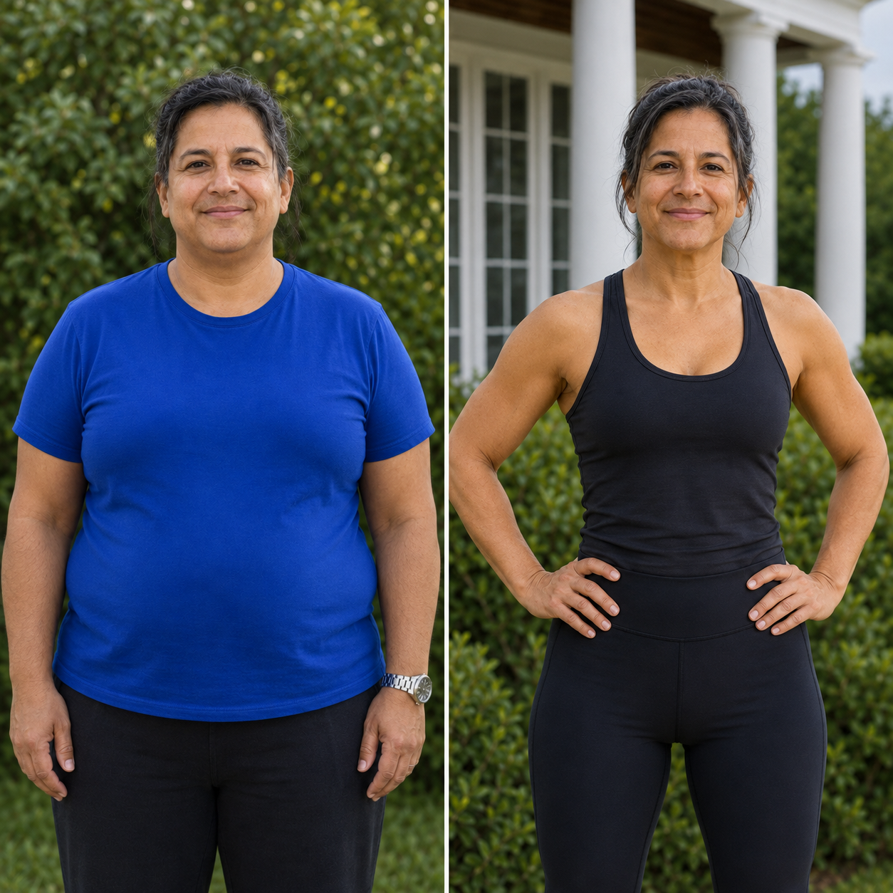
Because I could no longer stand seeing people suffer from excess weight!
Why did I decide to develop a remedy for obesity? To stop this deadly domino effect!
People gain weight at an alarmingly fast rate and become seriously ill because of obesity. But it's not their fault at all… The polluted environment we live in, ultraprocessed food, hormonal problems, stress, a sedentary lifestyle as well as hormonal changes that can affect women at different stages of life.
Many factors play a role, but that is not what matters now. The important and truly sad thing is how society treats people with excess weight.
I don't want overweight people to be seen as lazy gluttons.
200, 265, 330, 400 kilos? Those silly numbers on the scale don't define you! Your real self is here, hidden under a deadly layer of fat.
And you need to get rid of that fat layer not to please others, but to protect your health and even your life. The truth is that excess weight shortens life by an average of 12 years. But this shouldn't happen!
They laughed at me when I started working in the laboratory
Other specialists, who received a medical award in Mumbai, decided to focus on problems such as diabetes, atherosclerosis, or diseases of the joints and spine. When I found out about this, I clenched my teeth in anger.
Because all those diseases are caused by obesity!
It is simple and logical: you have to fight the cause, not the consequence! People should be healthy because their bodies are free of toxins, have a normal weight and a good metabolism, instead of taking dangerous chemicals for diseases caused by excess weight.
I decided to do everything possible to develop a remedy for obesity. I worked hard every day. I even received an official warning for staying in the laboratory at night, because no one was allowed to be there at that time. But our research was going so well, I was so motivated that I couldn't sleep at night and kept working.
After 17 months of research, I developed a product that revolutionized the way we look at weight loss and obesity. I discovered a series of connections between metabolic processes and the toxins that accumulate in the body.
The cause‑and‑effect relationship is as follows: when the intercellular space becomes saturated, toxins and decomposition products cause the metabolism not to function normally and at its usual pace. As a result, the blood becomes thicker, the sugar level increases and fat cells form three to four times faster and more intensively. This is how excess weight appears. When I began my research, I started from the hypothesis that…
Even a person who weighs 440 kilos is thin on the inside!
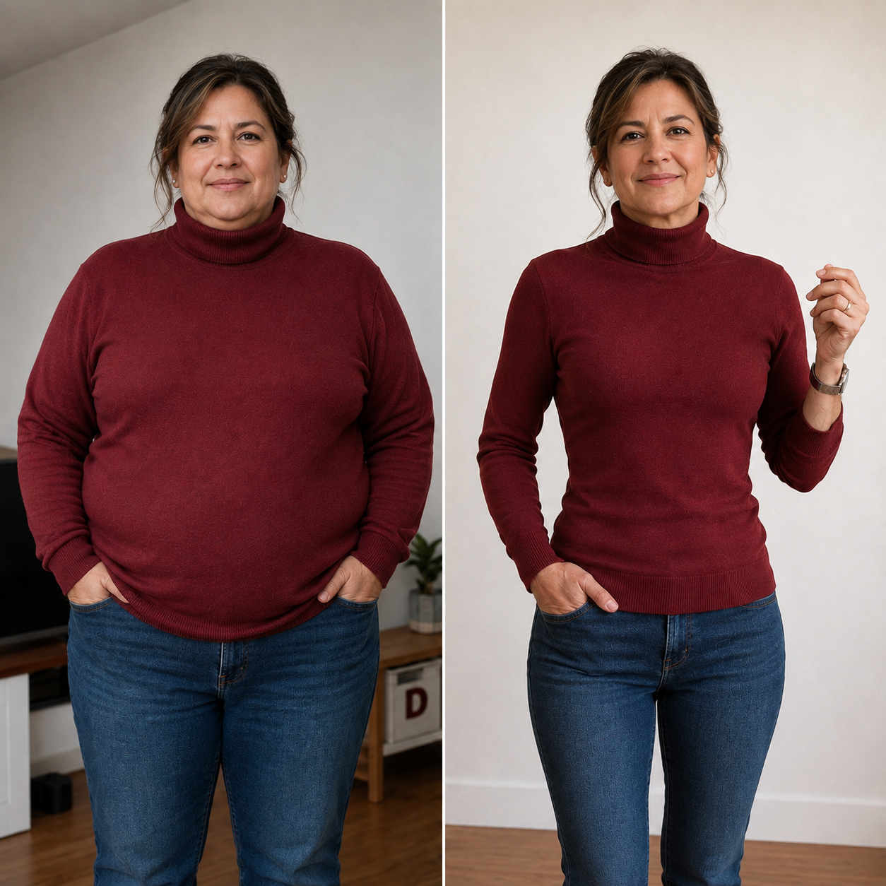
If you take an X‑ray of your body, you'll see a normal, slender figure on the screen. You can check it by pinching your belly, arms or legs. The elastic resistance you feel is excess fatty tissue.
In your lean body, there is a thick layer of fat. Depending on the degree of excess weight, its thickness can be several inches, or even more. It can weigh dozens of kilos. The good news is that you have an attractive body and an ideal shape. You're just hidden under a layer of fat. All you have to do is remove it. And I know how!
There are 3 types of fat layer.
The fat layer is not a homogeneous substance. Let's look at it in more detail. Medical studies show that the fat layer consists of 3 layers.
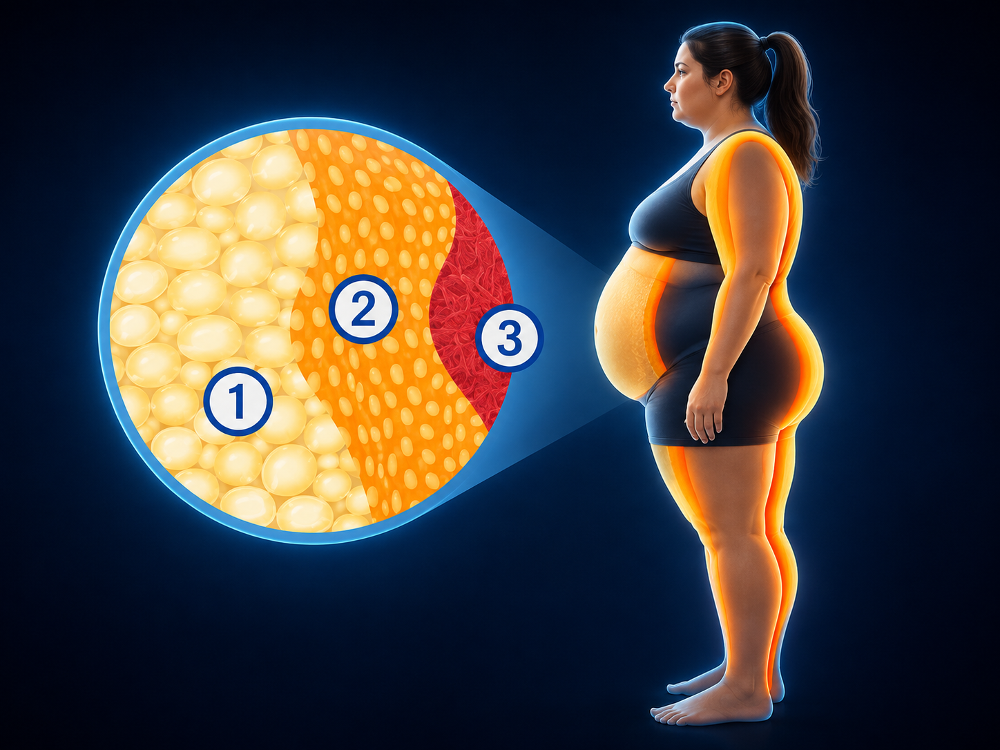
-
Subcutaneous fat. This is the outer layer just under the skin. It contains 57% water. It's cellulite and loose, soft skin.
-
Brown fat (or adipose tissue). This is the middle layer. Always the most difficult. Toxins accumulate here and cause stress, fatigue and skin problems.
-
Visceral fat (abdominal fat): the enemy that must be defeated! This is the deepest layer. It's the thinnest but at the same time dense and hard, like the sole of a shoe. It's very difficult to get rid of. It is precisely what creates the yo‑yo effect (returning to the previous weight). How does it happen? Even if you manage to lose weight, visceral fat tends to cover itself with other layers of fat, and this happens very quickly.
In our independent studies involving 9,000 people with excess weight, we clearly demonstrated that the weight‑loss methods known so far act only on the second layer of fat. And that leads to nothing!
The real cause of the yo‑yo effect
When you lose weight through dieting and workouts, fluid leaves the subcutaneous fat and you burn a few kilos of brown fat, but the visceral fat remains. You lose weight — and then visceral fat immediately takes revenge on you! It stimulates the rapid accumulation of fat and the formation of new fat cells.
This causes the yo‑yo effect, which cancels out all your efforts and makes you regain weight faster than you lost it.
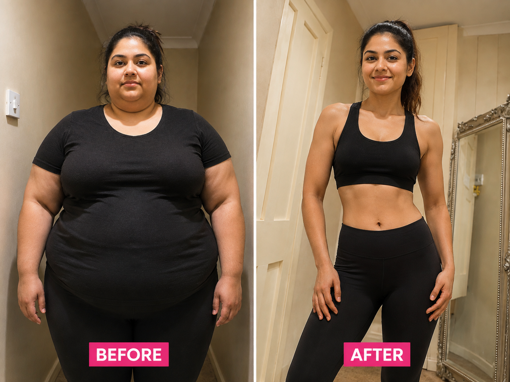
I overcame my excess weight and fixed my personal life
I am 37 now and in the last 10 years I have made exactly 17 attempts to lose weight. I tried every possible diet, went to the gym, but nothing worked… even though I really tried hard. My relationships were constantly suffering because of my lack of confidence. I compared myself with other women and felt uncomfortable in my own body, which made my self-esteem drop even further. I was almost desperate, but then came my seventeenth attempt to lose weight and it was Optiloss Capsule. I didn't believe in it much, but I was very wrong… I never thought that, after all these years of struggle, I would lose weight thanks to this product. It was incredible!
In 3 months, I became a different person. I finally started dressing better, because now buying clothes is easy: I can find my size in any store. At last, I feel confident and feminine again, and my partner notices it too. I no longer compare myself with other women, and our relationship is going really well. I am seriously thinking about getting married and having children. I never imagined that losing weight would change my life so much.
Riya Verma, 37, Delhi
Lost 128 kilos in 3 months!
Dissolve fat with a powerful blow with Optiloss Capsule and NEVER worry about gaining weight again!
Visceral fat is your real enemy: if you don't get rid of it, you'll never lose excess weight. The only way to eliminate it is my method. I analyzed the data and developed the only effective and safe remedy for eliminating visceral fat. How does it work?
Rapid burning of fatty tissue
By destroying visceral fat, brown fat (the stubborn fat) literally loses its “base.” It has nothing to hold on to, and therefore it burns. In addition, this guarantees the lightning disappearance of the subcutaneous fat layer: thanks to this, within the first 7 days, you'll get rid of flabbiness in your body.
Cleansing the body of toxins
When brown fat is burned during the breakdown process, the body is cleansed as toxins and cholesterol accumulated in that layer are eliminated. As a result, you sleep better, have more energy, and feel more optimistic. Your skin, hair, and nails recover. Many women also report feeling lighter, more energetic, and more comfortable in their bodies as they lose excess weight.
Protection against the yo‑yo effect
The most important thing is that destroying the fat prevents the yo‑yo effect. This means that after losing weight, you will never gain weight again. Studies showed that the body restores lipid memory after the fat is destroyed. You simply forget how fat accumulates on the abdomen, hips, buttocks and all over the body. The metabolism accelerates, so you can eat whatever you want without gaining weight.
Incredible, right?
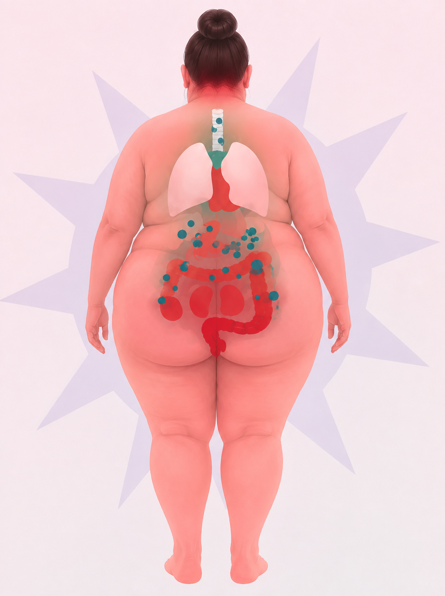
BEFORE
The body is covered in fat, full of toxins and lacking energy.
The body is covered in fat, full of toxins and lacking energy.
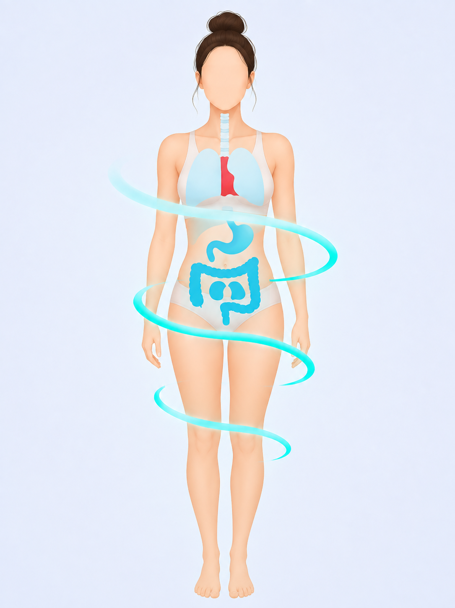
AFTER
A firmer body, toxin‑free, energetic and healthy.
A firmer body, toxin‑free, energetic and healthy.
Your body is already athletic
People with excess weight carry extra kilos every day. It's like carrying two or three large water jugs around all day without ever putting them down.
No athlete could carry the weight that overweight people carry all day. And they do it for years!
Our product acts only on the fat. In other words, only the fat burns and the muscles are preserved, which is very important. That way you simply make your natural athletic body visible. You gain not only an attractive figure, but also well‑defined muscles, performance and strength.
You don't need to go to the gym. Inside you there's already a healthy body. Just remove that thick layer of fat. With my product you'll be able to eliminate fat as easily and quickly as taking off a robe.
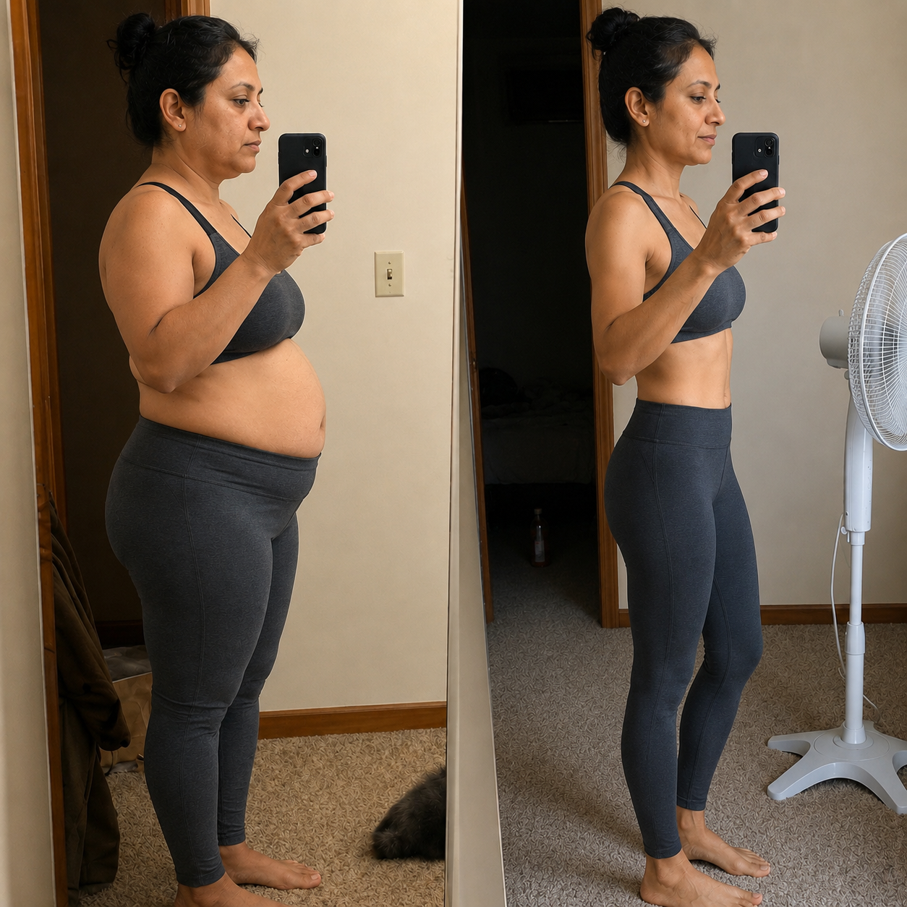
Fast and without harming my health!
I started losing weight on the first day of my vacation. After three weeks of vacation, the results were already very noticeable. When I went back to the office, everyone was surprised, although my weight was still pretty high. My boss even wanted to talk to me in person because he was worried, thinking I had lost weight because of some serious illness.
He was relieved when I told him how I'd done it. He congratulated me and asked me the name of the product because he also wanted to lose a few extra kilos. I told him everything, and he lost weight too. Thanks to that, we even became better friends, and he gave me a pretty nice raise.
Neha Singh, 59, Bengaluru
Lost 71 kilos in 2 months!
Plants that instantly destroy accumulated fat
The real remedy against obesity has been in our hands for centuries: plants. They grew quietly in the earth and waited for someone to finally pay attention to them.
All you have to do is combine them and give them the chance to act. The only thing needed was the sincere desire to rid humanity of obesity.
At the beginning of my research, I took more than 100 types of plants and studied them thoroughly. Then I selected the most effective extracts. Each extract is like a lone miner who has to drill a tunnel through a mountain. In theory, he can do it, but it would take years. To truly open such a barrier, you don't need a solitary worker, but a powerful machine and a team: then the result comes 100 times faster.
My method is like a giant drill in the mountain of excess weight
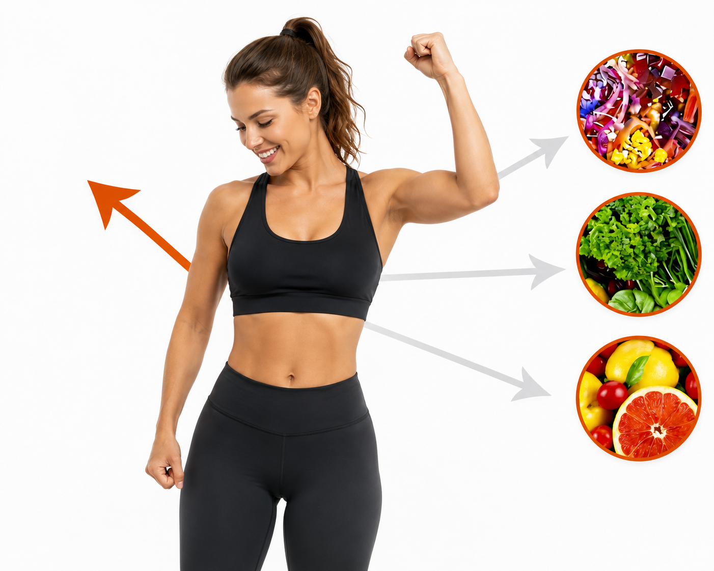
Result UP TO 42 kilos PER MONTH
The product's effectiveness is based on the combination of plant extracts from four continents. Thanks to this unique combination, these ingredients act 100 times more effectively. This combination guarantees rapid fat burning. Fat doesn't have a single chance: it simply disappears and frees the body from excess weight!
Look how simple it is
-
You don't need to spend months eating apples, carrots and salads. You don't need to go to the gym. You don't even need to leave home. You can eat whatever you want. You don't need to move. You don't need to change anything in your daily life. The weight-loss method with Optiloss Capsule is very simple. How does the treatment work?
-
Prepare to take Optiloss Capsule once a day. Simply swallow one capsule with a glass of water. It's convenient, easy to use, and fits seamlessly into your daily routine. The active ingredients are absorbed by your body and work throughout the day. You don't have to change your lifestyle—just go about your day as usual while your body supports its natural metabolism. Over time, it helps your body utilize stored fat more efficiently, helping you work toward a slimmer, more confident figure.
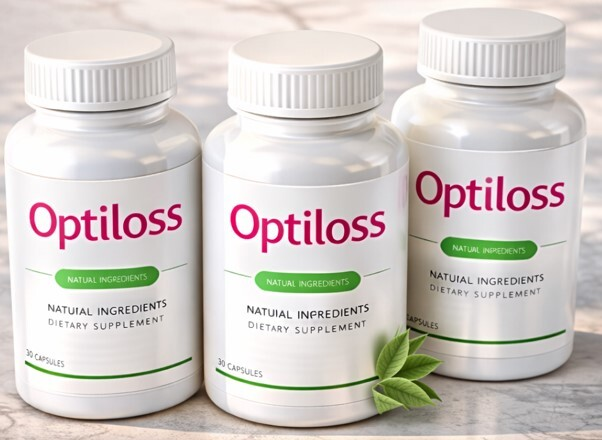
Look how safe it is
-
There is no risk of relapses, as with diets. You don't risk damaging your joints or suffering arrhythmias, as happens with hard workouts. You won't have any side effects. Why?
-
The treatment is 100% natural. Its use doesn’t interfere with medications, doesn’t irritate the digestive system, and doesn’t cause allergies. All thanks to its completely natural composition. The product’s ingredients are selected so as not to harm the body. They are consumed in the form of a drink and gently and effectively absorbed by the body.
Eliminate the root of the problem
Another important decision was choosing the right form for my weight management formula. I developed Optiloss Capsule, designed in an easy-to-take capsule format that allows the active ingredients to be efficiently absorbed by the body. It supports healthy metabolism and helps your body naturally manage weight throughout the day. Best of all, it's simple to use—just one capsule daily. No strict dieting or intense workouts required.
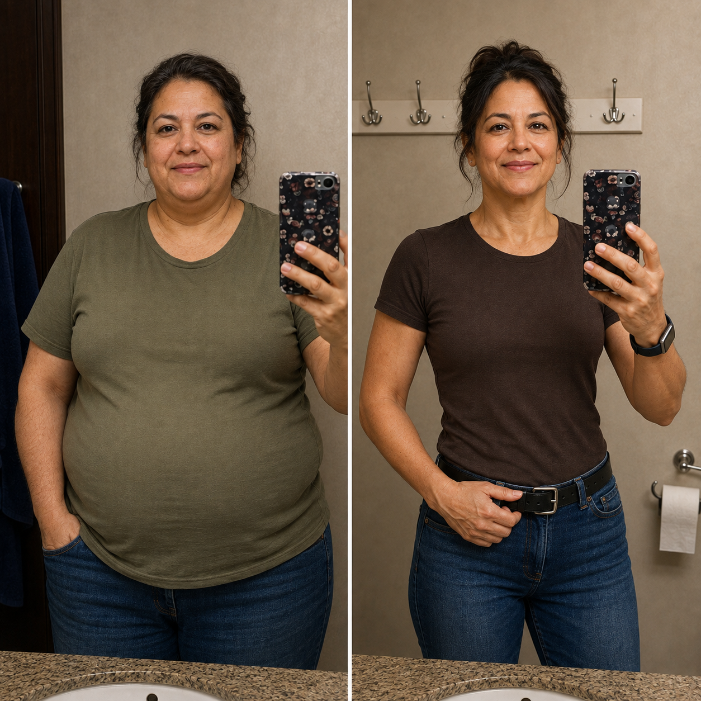
World-renowned professors of medicine describe my method like this:
-
42 kilos in 4 weeks. With this method, you lose weight 12 times faster than with the strictest diet and daily workouts…
-
It is natural and safe. The new Optiloss Capsule contains only natural ingredients that eliminate fat and are gentle on the digestive system. Optiloss Capsule does not cause allergies and can be used together with any medication.
-
You don't need to change your diet. In fact, it's not even recommended. Dieting slows the metabolism, which makes weight loss more difficult. The new method works more effectively, destroying directly the enemy of your slender body: visceral fat.
-
Physical exercise is not required. You can work out during the course, but it's not necessary. You will lose weight regardless of your physical activity. You can sit for hours on the couch watching TV and still see a guaranteed result.
-
You won't have to spend much. The money you would otherwise spend on a dietitian, the gym, expensive teas and supplements will stay in your pocket!
Always effective and under any circumstances
These graphs reflect the results of our studies and studies conducted by our colleagues at national centres in the India, the United States, Japan, the United Kingdom, France, Switzerland, and Sweden. The results presented are based on data from a total of 27,000 women aged 18 to 98.
Average weight loss in 4 weeks by age
40 lbs
40 lbs
42 lbs
42 lbs
42 lbs
40 lbs
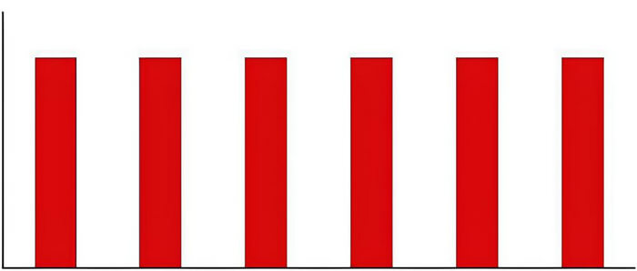
18–29 years
30–39 years
40–49 years
50–59 years
60–69 years
70–98 years
The results of the analysis clearly show that the method is effective regardless of age. The best effect was observed in people aged 40 to 69.
Average weight loss in 4 weeks by lifestyle
42 lbs
42 lbs
44 lbs
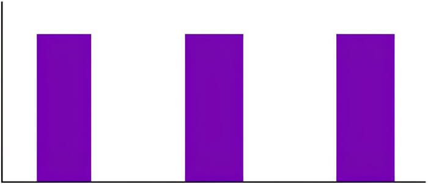
Sedentary work
Standing work
Physical work
The results of the analysis clearly show that the Optiloss Capsule course leads to weight loss regardless of the level of physical activity at work.
Average weight loss in 4 weeks among women
37 lbs
37 lbs
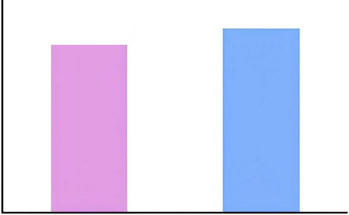
WOMEN
WOMEN 40+
The test results show weight-loss results across women of different ages and lifestyles.
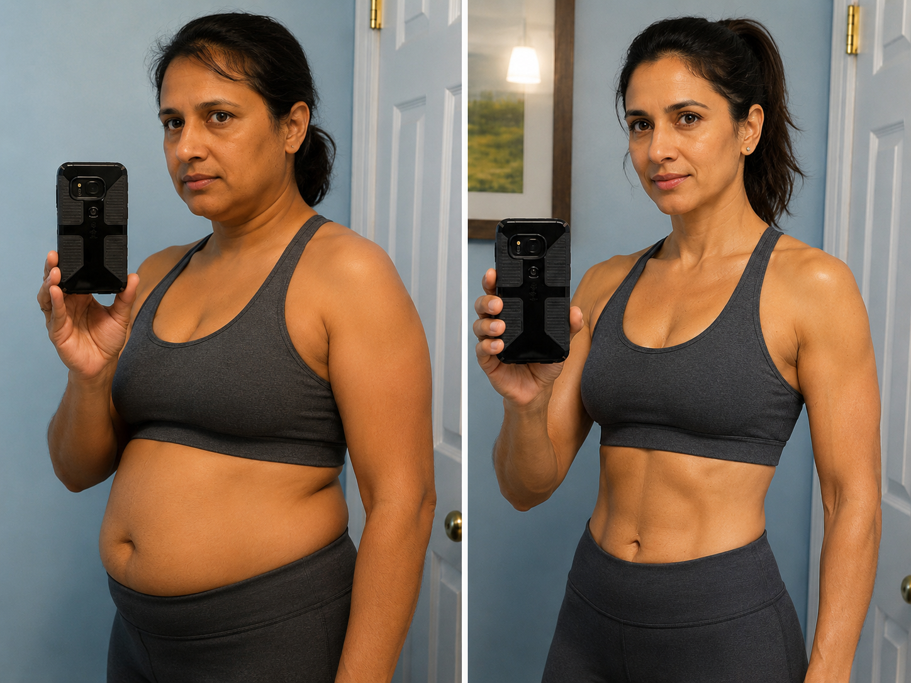
I eat whatever I want and I don't have a belly!
I had been fooled more than once by various advertisements and recommendations from acquaintances. This time I also wanted to say “no.” But my daughters kept supporting me and recommended that I try this product if I didn’t want to live on “salad” alone.
So I started using this remedy just to get them off my back. The ingredients are natural, so I thought it wouldn’t harm me and that they would see for themselves that all this was nonsense.
Well, I had to eat my words: I was wrong. My belly literally disappeared in two weeks. I also noticed that I started feeling much better. With these changes, I even decided to change my look: I changed my hairstyle and refreshed my wardrobe. Now I can play soccer with my grandchildren without any problems. And I still eat the same food, but I don’t gain an ounce!
Kavya Patel, 51, Hyderabad
Lost 53 kilos in just 5 weeks!
See how simple it is
You don’t need to spend months eating only apples, carrots, or salads. You don’t need to torture yourself at the gym. You don’t even have to leave home. You can eat whatever you want. There is absolutely no reason to change anything in your daily life. The “42 kilos in 4 weeks” weight-loss method is very simple.
See how safe it is
There is no risk of relapse or of feeling unwell like with diets. You won’t damage your joints or suffer arrhythmias like you can with physical exertion. And you won’t have any side effects!
The method is 100% natural
Its use does not interfere with medications, is gentle on the digestive system and does not cause allergies. And it’s all thanks to a completely natural composition!
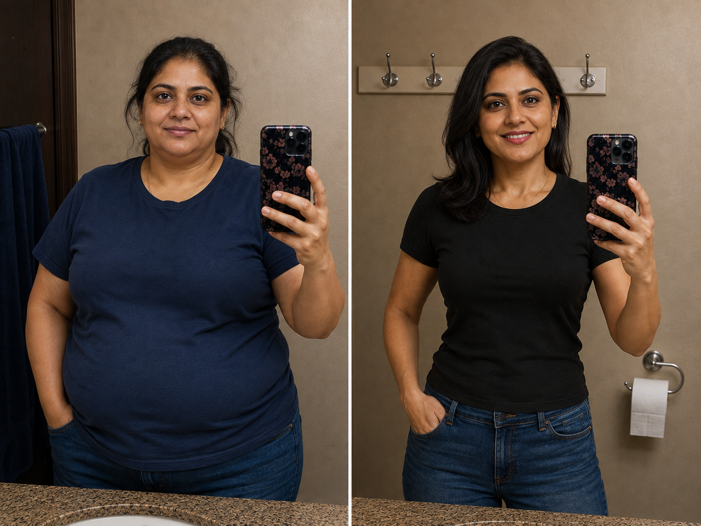
Some call me a hero, others call me... crazy
Yes, crazy… Because I have already helped 27,000 people lose weight without charging a cent for our discovery. Together we decided that, since obesity is a huge global problem, we don’t want to get rich by selling our unique weight‑loss remedy. We decided to make people’s lives easier without making money on it.
In six months, 27,000 people have already used our method, and we are very happy about it.
But on July 27, 2026 we were forced to sell the patent for the treatment method to obtain funding for our next scientific research. We plan to develop treatments for other conditions, including joint and back problems. However, this research is expensive and we need money.
Unfortunately, when the patent is sold, Optiloss Capsule will be sold for at least 10 times the current price. That’s why we want everyone who needs this product to order it before the patent is sold.
That’s why we strongly recommend buying it RIGHT NOW! You risk nothing!
When you buy Optiloss Capsule you risk nothing because you are protected by a triple guarantee: originality, quality and effectiveness.
Certified original product
You can be sure you receive an original product, available only on this website.
You can be sure you receive an original product, available only on this website.
Quality verified by studies
Thanks to a modern production process, the product meets the highest quality standards. All ingredients are 100% safe for health.
Thanks to a modern production process, the product meets the highest quality standards. All ingredients are 100% safe for health.
27,000 users confirmed its effectiveness
Numerous independent tests and consumer studies also confirm the unparalleled effectiveness of the method.
Numerous independent tests and consumer studies also confirm the unparalleled effectiveness of the method.
Life is too beautiful to end it prematurely because of excess weight or insecurities.
You don’t have to suffer for another minute! Get rid of excess weight and protect your health. You have absolutely nothing to lose except 40, 100, or 170 extra kilos. You will get a firmer, slimmer body, lots of positive energy, and better health.
How Optiloss Capsule works:
-
Days 3–5: The body eliminates excess water. Swelling decreases, and the process of ketosis begins. Weight loss is approximately 15–20 kilos.
-
Days 5–10: Acceleration of metabolism. The body fully absorbs nutrients and begins to burn fat reserves more intensely.
-
Days 10–15: Active phase of lipolysis. The fat‑burning process and its conversion into energy intensify. You’ll feel happier and more energetic.
-
Days 15–20: Body balance and increased energy levels. Normalization of metabolic processes. At this stage, a person loses an average of 40–62 kilos.
-
Day 21 and onward: Burning of visceral fat. Fat leaves the internal organs. The abdomen becomes firmer and health improves significantly.
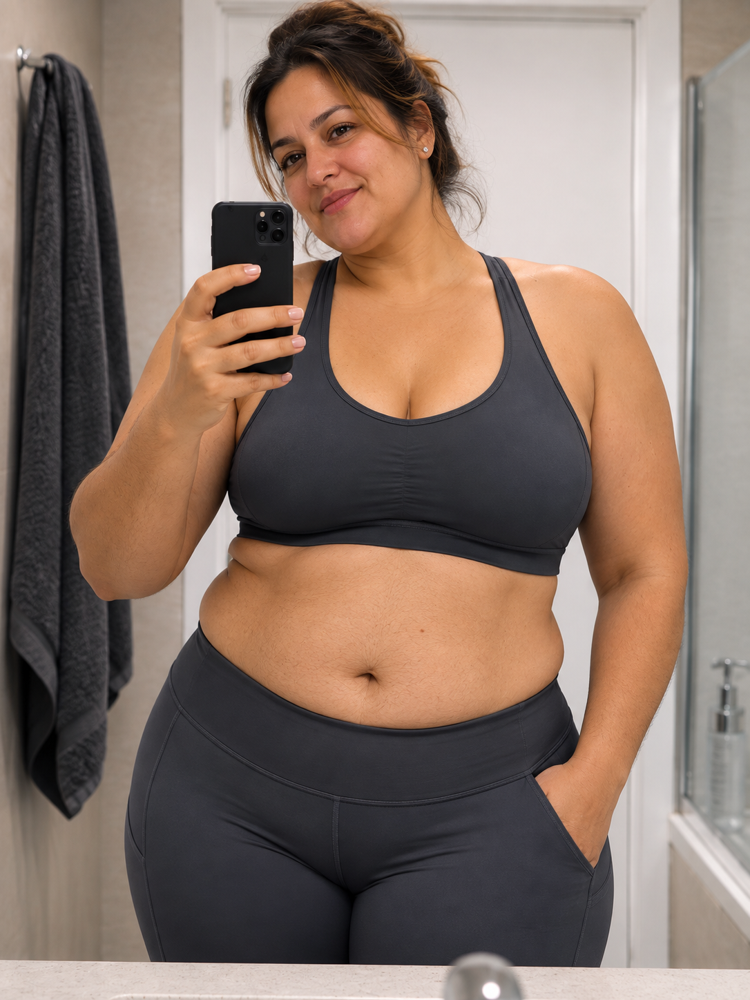
After 7 days of use
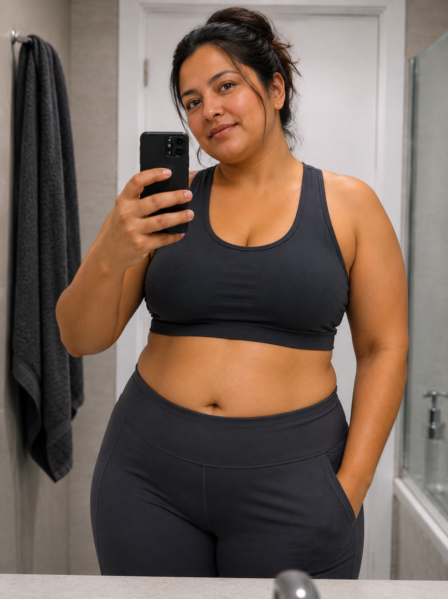
After 14 days of use
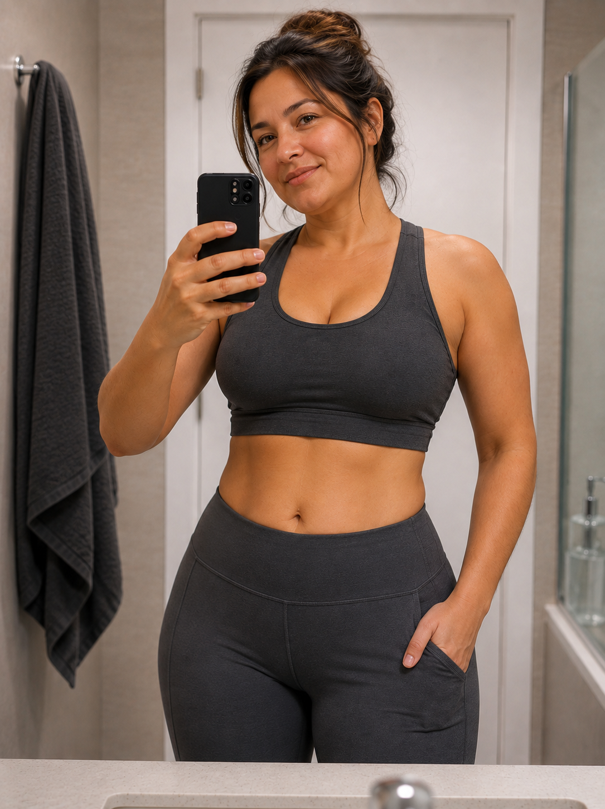
After 21 days of use
You have a simple choice:
1. Do nothing...
And continue suffering because of the “fat cloak” that envelops your body, makes you feel inferior and puts your health at risk?
2. Take the opportunity RIGHT NOW!
And get rid of excess weight once and for all. It’s simple! Fill out the form below in 2 minutes, and in a few days, you’ll start losing weight.
Make the dream of having a slim and healthy body come true!
Thank you for reading our article! To support your decision to get rid of excess kilos, together with the manufacturer, we have prepared a promotion for Optiloss Capsule that gives you a 70% discount... If you decide to use our method today, then in a few weeks, when you become a slimmer, healthier person, you will remember this day with a smile and think: “That was the day that changed my life...”
We wish you health and happiness!
Take part and get a 70% discount on Optiloss Capsule
Conditions to participate in the promotional discount:
1. You must live in India and be over 18 years old. The product is available at the promotional price only for adult Indian residents.
2. Purchase for personal use only. This is necessary to prevent resale.
3. Only through the official draw form. Since the quantity of the product is limited, sales are carried out via a test. You will find it below.